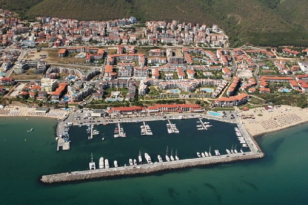
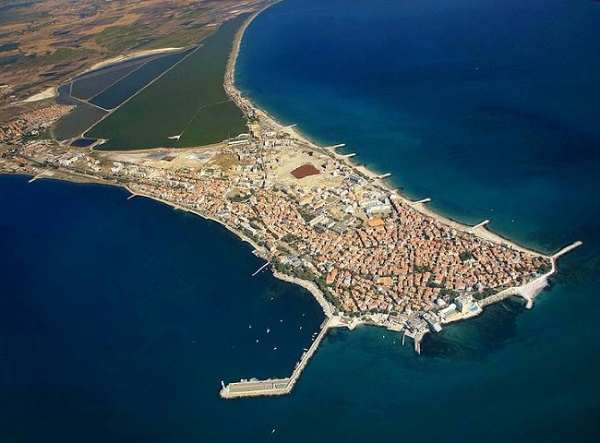
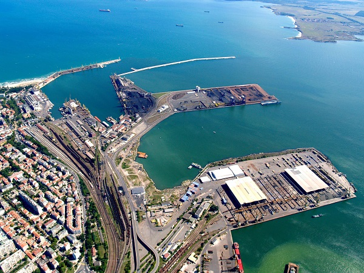
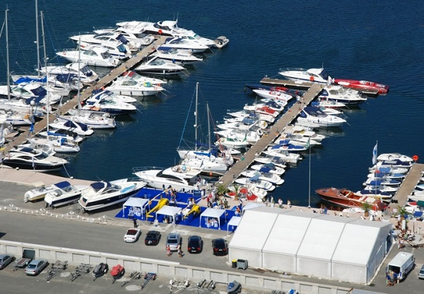

Намира се в Свети Влас. Пригодено е за около 300 съда и предлага разнообразни услуги за посетителите. Условията са подходящи и за домуване, и за временен престой.

Защитено е при повечето случаи на силен вятър, освен от югозапад. Освен за стоянка на яхти, се използва и за малки корабчета, а в миналото и за комети.

Това е луксозно яхтено пристанище с обслужване и разнообразни услуги. На разположение на клиентите има и плаващ бар.
Намира се в рамките на търговското пристанище. Разполага с различни екстри, включително предоставя ремонтни дейности и гранична контрола.

Старият град има две марини - Яхтено пристанище „Марина Созопол" и Яхтено пристанище „Марина Порт Созопол", напълно оборудвани. В блиост има яхтен магазин. И двете пристанища са подходящи и за целогодишно ползване.
